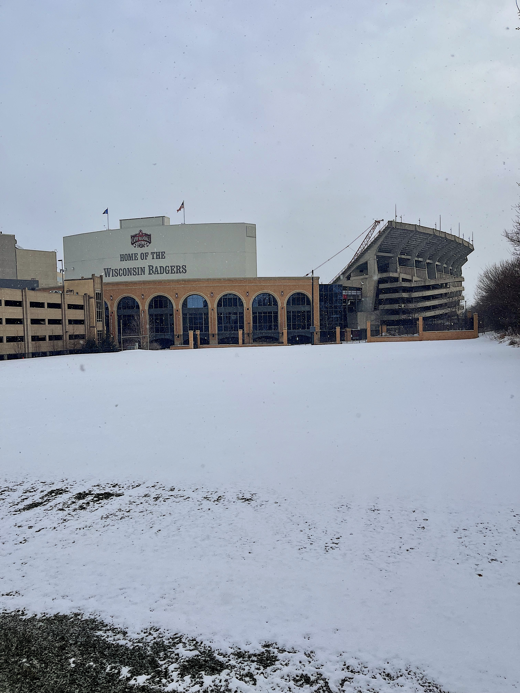
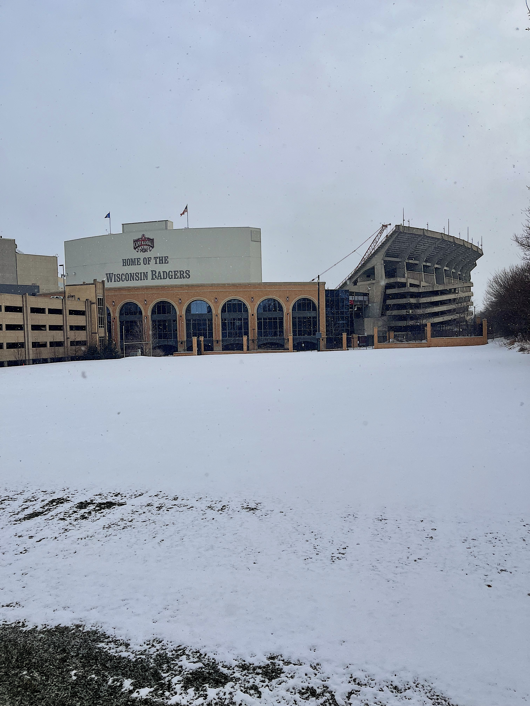

What is so special about UW-Madison?
> UW-Madison is a research-based public instution in Madison, Wisonsin. It is the official and largest college for the state of Wisconsin. Some of the scientific advances made at UW-Madison include the first chemical synthesis of a gene, and the discovery of the vitamins A and B. This school is also considered a public Ivy in the midwest! The CEOs of 14 Fortune 500 companies have attended UW-Madison. Currently, the US News and World Report ranks this school 42nd among national universities, and 13th among all public universities. Not only is this school great for academics and research, it is a big 10 school. The Badgers have won 31 naitonal championships!
 
